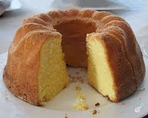

Bolo Simples

Ingredientes Necessários
- 2 xicaras de açucar
- 4 colheres (sopa) de margarina
- 4 colheres (sopa) de margarina
- 3 xícaras (chá) de farinha de trigo
- 3 ovos
- 1 colher (sopa) bem cheia de fermento em pó
Modo de Preparo
- Bata as claras em neve e reserve.
- Misture as gemas, a margarina e o açúcar até obter uma massa homogênea.
- Acrescente o leite e a farinha de trigo aos poucos, sem parar de bater.
- Por último, adicione as claras em neve e o fermento.li>
- Despeje a massa em uma forma grande de furo central untada e enfarinhada.
- Asse em forno médio 180 °C, preaquecido, por aproximadamente 40 minutos ou ao furar o bolo com um garfo, este saia limpo.
Volte para a página principal
Vídeo passo a passo